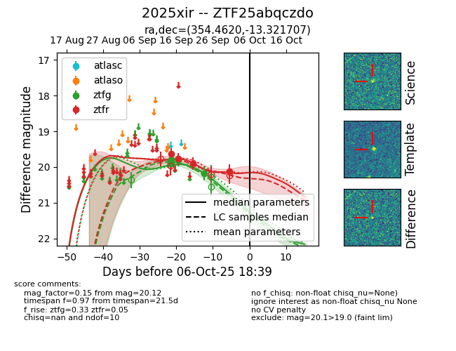

FINK: ZTF25abqczdo
Lasair: ZTF25abqczdo
ALeRCE: ZTF25abqczdo
TNS: 2025xir
YSE: 2025xir
ZTF25abqczdo (ztf,fink)
2025xir (tns,yse)
equatorial (ra, dec) = (354.4620,-13.32171)
galactic (l, b) = (68.0472,-67.94803)

last ztfg=19.81, ztfr=19.91
3 ztfg, 3 ztfr detections